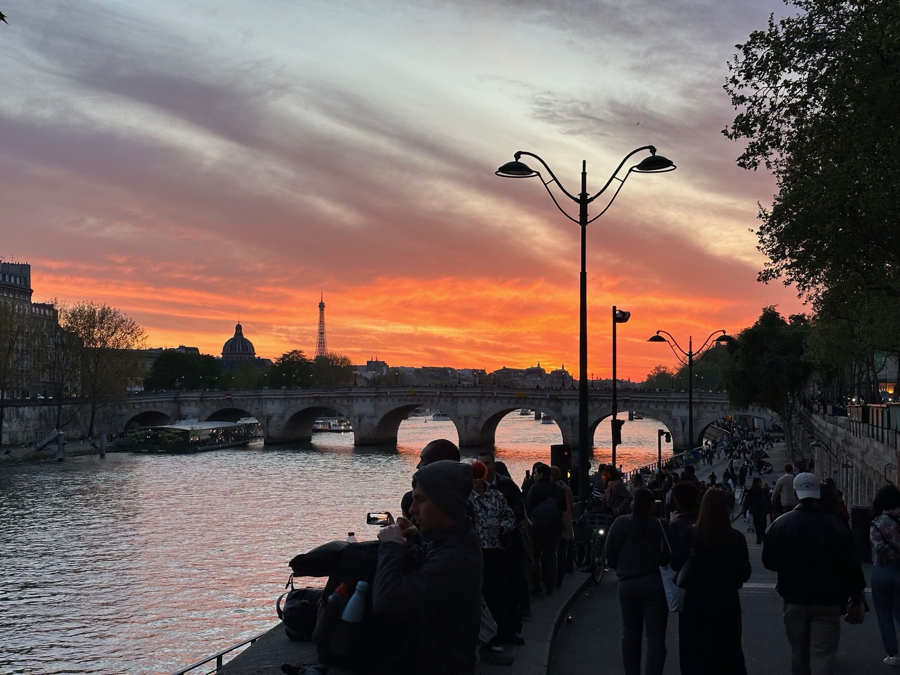
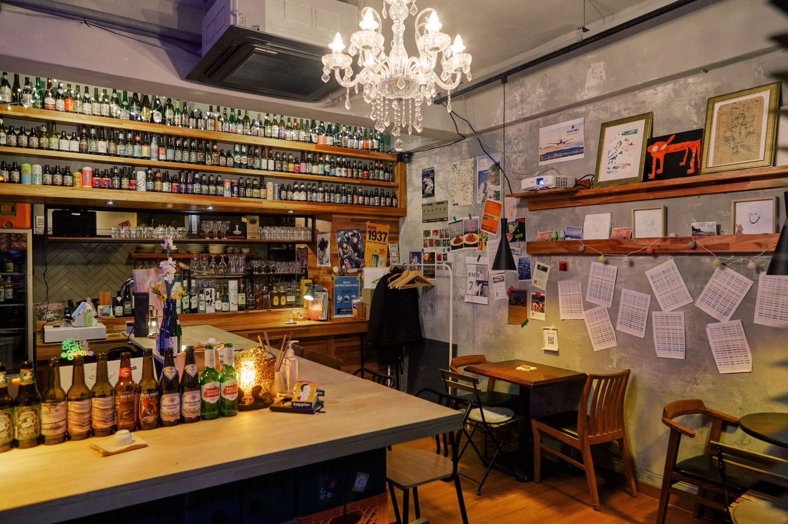
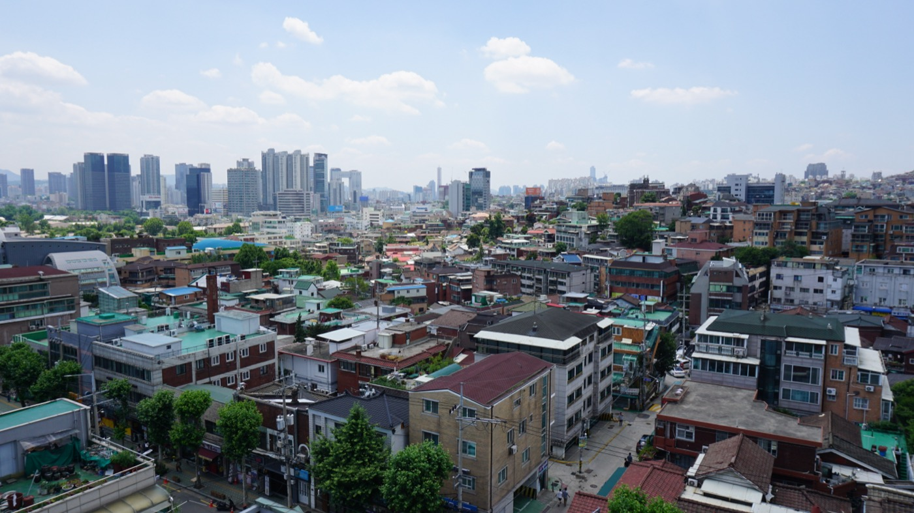
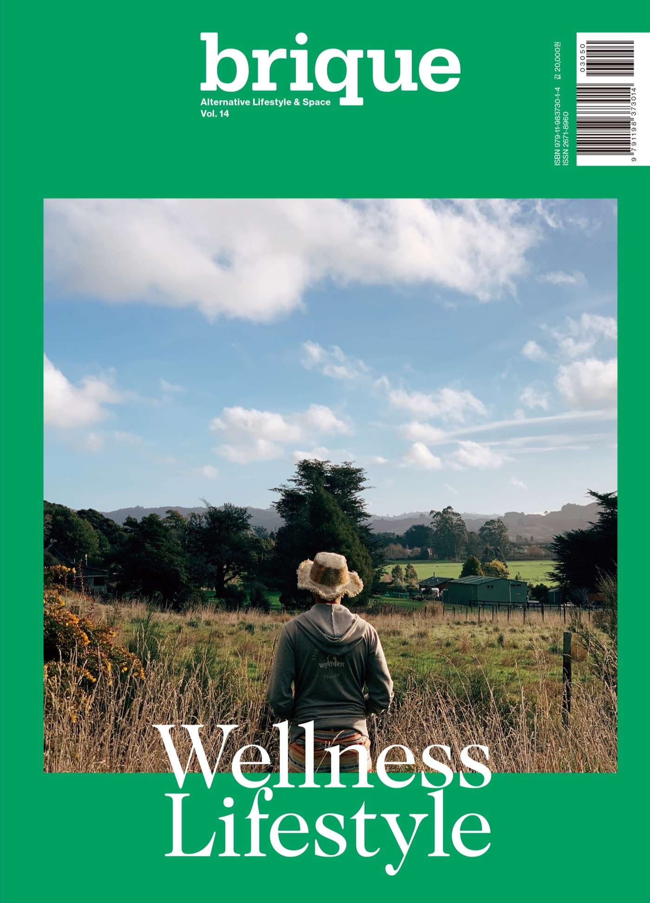
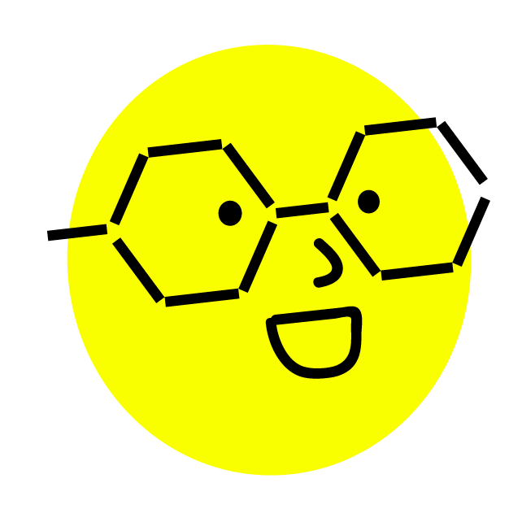

동네를 거닐며 그 흐름 속에 있는 공간, 커뮤니티, 그리고 한 사람과 함께 변화를 만들어 갑니다.
Walking through the neighborhood, we create change together across spaces, communities, and every individual we meet.
Works
A leading portfolio from eye-level details to wide cultural context.

커뮤니티 바 삼만항 운영
당산동 골목에서 지역 주민이 하루의 주인장이 되어 관계와 운영을 함께 만들어 가는 커뮤니티 바 실험 프로젝트.

프로젝트 후암 홈페이지 기획 및 제작
후암동의 지역성과 커뮤니티 활동을 디지털 아카이브와 소개 플랫폼으로 연결한 홈페이지 기획 및 제작 프로젝트.

브리크매거진 14호 Wellness Lifestyle 기획 총괄
웰니스 라이프스타일을 주제로 사람, 공간, 생활문화를 엮어낸 매거진의 기획과 편집을 총괄한 프로젝트.

한칸 HANKAN 브랜드 스토리 등 콘텐츠 기획
브랜드의 세계관과 캐릭터를 바탕으로 스토리텔링 방향과 다양한 콘텐츠 확장 가능성을 기획한 프로젝트.
Experience Hub
An editorial archive of essays, field notes, and publication records gathered through travel and practice.
Enter the reading room through articles, publications, and shorter notes. The Experience Hub is where observations become texts, and projects expand into context.
Trip
도시와 사람들 사이에서,
감각을 넓혀온 시간들
Between cities and people, a journey that has expanded the senses.
38
cities visited
3
focus regions
180+
mapped moments